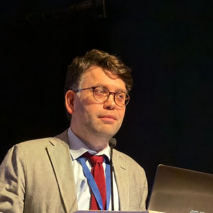
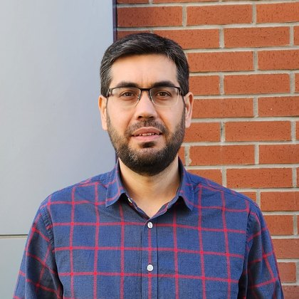
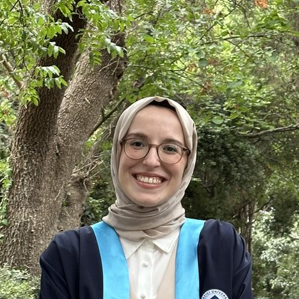
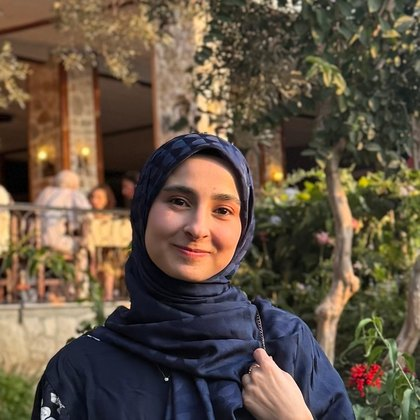
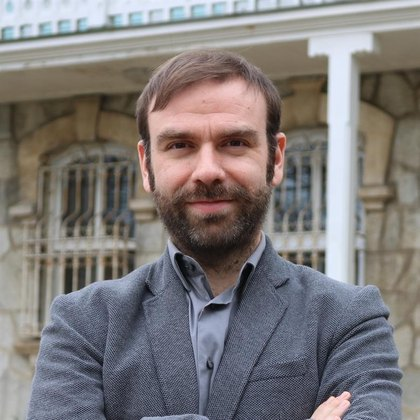

Dr. Ahmet Abdullah Saçmalı
Founder
A researcher working on texts written in Ottoman Turkish and the developer of LexiQamus. He is a graduate of Boğaziçi University, where he earned his bachelor’s degree in Sociology and History. He subsequently completed his first master’s degree in History at the same institution.
In 2010, he joined the School of Middle Eastern and North African Studies at the University of Arizona in the United States, where he earned his second master’s degree. In 2014, Dr. Saçmalı began his doctoral studies at the School of Government and International Affairs at Durham University in the United Kingdom. He successfully defended his doctoral thesis in 2019 and was awarded his Doctor of Philosophy (PhD) degree in 2020.
From 2017 to 2021, Dr. Saçmalı worked as a research assistant in the Department of Sociology at Ibn Haldun University. For two years during this period, he taught a range of sociology courses as well as courses in Ottoman Turkish.
During his doctoral studies, Dr. Saçmalı developed LexiQamus, initially conceived as an online tool to assist researchers in deciphering difficult-to-read words in Ottoman texts. The project has since evolved into a much broader digital platform devoted to the historical vocabulary of Turkish. In addition to its linguistic analysis and deciphering tools, LexiQamus aims to digitize, with a high degree of scholarly precision, the dictionaries of Turkish produced from the historical period to the present day. By bringing this extensive lexicographical heritage together within a unified digital environment, the project seeks to document and explore the full historical breadth and lexical boundaries of the Turkish language.
LexiQamus has attracted considerable attention from scholars and academic institutions around the world. Based in Istanbul, Turkey, Dr. Saçmalı and his team continue to develop the platform.

Asst. Prof. Habib Saçmalı
Project Coordinator
An Assistant Professor in the Department of History at Marmara University. He completed his undergraduate studies at Boğaziçi University with a double major in Sociology and Political Science and International Relations, and earned his MA in the same department. He received his PhD in History from the University of California, Davis, in 2021, with a dissertation on Ottoman-Iranian relations and the Ottoman caliphate. He has published on Ottoman-Safavid relations and Eurasian diplomacy in journals including the Journal of Early Modern History, Ab Imperio, and İslam Araştırmaları.

Buse Büyükkeskin
Project Assistant
Completed her B.A. and M.A. degrees in the Department of Turkish Language and Literature at Boğaziçi University. She earned her master’s degree with her thesis titled “The Story Collection ‘Supplément Turc 949’ in the National Library of France: Analysis and Text”. She works on early modern Ottoman prose stories. She has been working as part of the LexiQamus project since November 2023.

Hatice Tüfekçi
Project Assistant
Graduated from the Department of Turkish Language and Literature at Sivas Cumhuriyet University. In 2024 she completed her master’s degree in the Department of Classical Turkish Literature at the same university with a thesis titled “Verse Silsile-nâmes of Sufi Orders in Turkish Literature”. She has also published an article, “An Overlooked Poem by Muhammed Vahyi Efendi: The Sünbüliyye Silsile-nâme”. For about a year she taught Turkish to foreign students at the TÖMER unit of Sivas Cumhuriyet University. Her work covers the digitization of Ottoman Turkish texts, dictionary projects, and the textual criticism of manuscripts. She joined this project in 2018 and has been running its research and data management processes as a project assistant since 2022.

Seher Bulut Köse
Project Assistant
Born in Medina in 1992, the second child of a father from Erzurum and a mother from Malatya. She graduated from the Faculty of Theology at Uludağ University in 2015. In Turkish-Islamic Literature she studied The Masnawe Hesht Bahest of Vadi Ahmad. She currently works at LexiQamus. She is married and the mother of Bilâl, Hamza, Halîme, and Süheyla.

Zeyneb Odabaş
Project Assistant
Completed her undergraduate studies at Marmara University Faculty of Theology. She earned her master’s degree from the Department of Tafsīr at Social Sciences University of Ankara, completing her thesis titled “Ibn Taymiyyah and His Muqaddimah as a Methodological Approach to Tafsīr: A Critical Analysis”. She has been working on the LexiQamus project since October 2023.

Dr. Enis Tombul
Project Assistant
Completed his B.A. and M.A. in Turkish Language and Literature at Boğaziçi University; his M.A. thesis, Beşiktaşlı Yahya Efendi’s Divan, was published as a book by Harvard University. He earned his Ph.D. in Old Turkish Literature at the same university with a dissertation titled The Earthly Beloveds in the Ghazals of the Sixteenth Century. He has taught Turkish literature at Boğaziçi University and literature and prosody at the Istanbul University State Conservatory, and served as project specialist and coordinator of the Historical Turkish Music Research and Multimedia Archive Project at Istanbul University’s OMAR center. His articles on Turkish literature and Ottoman music have appeared in academic journals and edited volumes; he currently works as a literary consultant, researcher, author, and editor.